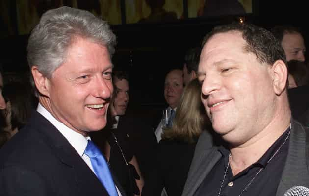

“It wasn’t a secret to the inner circle,” said Kathy DeClesis, Bob Weinstein’s assistant in the early 1990s.
— The New York Times
Covering countless topics from the benefits of socialism to the evils of “manspreading,” multimillionaire Hollywood stars and other celebrities have been moralizing to politicians and the general public for decades. On matters related to women and “misogyny,” however, these pampered souls have arguably been the loudest.
The irony of this constant Hollywood fixation became all the more apparent this week after news of producer Harvey Weinstein’s long-term sexual harassment of women broke. What’s more is that Weinstein basically admits he has sexually harassed multiple women. This does not mean that every accusation against him is true, but it does demonstrate the rank hypocrisy of Tinseltown. One of its leaders, if not its major leader, is preaching liberal, feminist values despite having sexually hounded female staff and starlets.
The New York Times, to its partial credit, has turned on a political ally (Weinstein is an avowed Democrat and Hillary Clinton supporter). Carlos Slim’s publication is listing allegations against the Miramax and Weinstein Company co-founder that date back around three decades. Though it is nice to see such a leftist outlet eating one of its own, The New York Times almost certainly wouldn’t have pursued the story if it didn’t anticipate revenue from it.
Harvey Weinstein with Vince Vaughn and Ashley Judd in the 1990s. Judd has accused Weinstein of sexual harassment and abuse.
So our major question should be this: if Weinstein’s sexual harassment was not a “secret” according to those who know and knew him, where were all the Hollywood stars? His accusers include actresses Ashley Judd and Rose McGowan. Moreover, he has been praised by the likes of Academy Award winners Colin Firth and Jennifer Lawrence. Did any of these stars have any inkling of the allegations, allegations which, according to The New York Times, have resulted in eight known financial settlements with accusers?
Whilst the individual allegations from people like Judd, McGowan and others are not necessarily all true, surely a raft of other celebrities, including men, knew about at least some very negative alleged incidents involving Harvey Weinstein and women. Where were these male stars in particular? Counting their pay checks and too scared to confront the issue head-on?
Do not expect any introspection from Hollywood whatsoever

For a party that swears by the “Republican war on women,” the Democrats sure as hell hang out with some left-leaning abusers of women in Hollywood.
The allegations against Harvey Weinstein, both the true ones and the invented ones, will not encourage Hollywood heavyweights to reconsider their putrid activism. Instead, they will use Weinstein’s transgressions as an excuse to moralize even more than before. “See, we told you misogyny was everywhere!” will be the response we get.
What we can expect is more clamoring about the Hollywood “gender wage gap,” an even greater emphasis on “strong women” roles where petite girls beat up muscled male soldiers ad nauseam, and a doubling down on all things related to “rape culture” and “entrenched sexism.” Of course, Republicans and non-leftists will be in the scopes of major producers and stars, forgetting that they have had zero to do with leftwing Hollywood men abusing women since the dawn of time.
In fact, the blame-shifting has already started. Harvey Weinstein himself has promised to “atone” for his sins by–wait for it–attacking the National Rifle Association (NRA). Who ever said Hollywood types never took responsibility for their actions? Similar to many in Tinseltown, Weinstein is a vocal hater of Donald Trump. We can therefore anticipate that he will launch numerous broadsides at and attempted character assassinations of the US President in the coming months. Anything and everything will be used to ingratiate himself back into the respect and good graces of Hollywood.
Sadly, this strategy almost always works. A prime example is the constantly protected Roman Polanski. This filmmaker, rightfully seen as a pariah by the general public for anally raping a 13-year-old girl forty years ago, is nevertheless perhaps the most revered–and defended–living director within high-flying acting circles. Virtually no attention has been paid by celebrities to more recent allegations that Polanski sexually abused other young women, even minors. Harvey Weinstein may not have been accused of statutory rape or another form of truly serious criminal sexual abuse, but he has obviously considered Polanski’s story as a sign that he can easily rebound back into Hollywood’s main orbit.
Who’s next?
If Roman Polanski can keep Hollywood’s respect, Harvey Weinstein will, too.
Some have speculated that Harvey Weinstein fell afoul of key liberal requirements, like keeping up leftwing political fundraising, and was therefore outed for his sexual transgressions. I remain skeptical about this, but there are certainly other, mostly very leftwing Hollywood producers, directors, and stars with closets full of female-related skeletons.
Despite my lack of sympathy for Weinstein, there is no doubt that a number of false accusers are going to come forward against him or other men in Tinseltown to get lucrative cash settlements. These men may end up getting their just desserts, yet any witch-hunts within celebrity circles may also have a detrimental impact on society at large.
Even after years of high-profile rape hoaxes, such as the Duke lacrosse case and Emma Sulkowicz’s lies, we should be wary of stories like this one that might help swing the pendulum back the other way and again legitimize unproven, inconsistent accusations of rape, sexual abuse, or “harassment.” Too much is at stake for us to simply yell “Schadenfreude!” at Harvey Weinstein or comparable figures.
Meanwhile, the hypocritical Hollywood train of self-absorbed political activism will roll on. Having harbored and downright protected a man like Weinstein for decades, they will still shout that the rest of us in the real world are all shameless misogynists.
Read More: Does The Hollywood Elite Use Rituals And Sexual Blackmail To Keep Its Stars In Line?